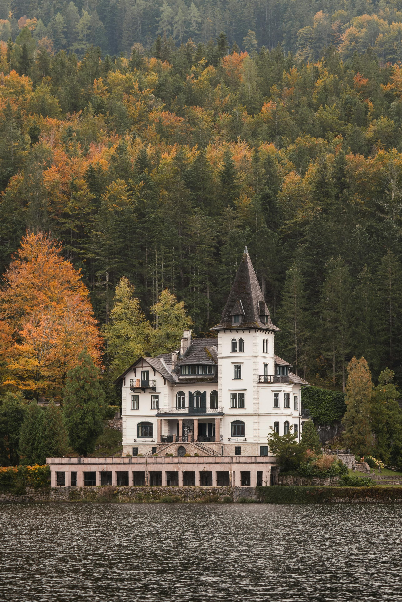

Best Travel Tips

- Best Time to Visit: Spring (September-November) and autumn (March-May) offer pleasant weather across most regions.
- Language: English is the primary language, though Australia is highly multicultural.
- Currency: Australian Dollar (AUD); credit cards and ATMs are widely available.
- Health and Safety: Always wear sunscreen, a hat, and stay hydrated, especially in rural or Outback areas.
- Travel Insurance: Essential due to remote areas and high medical costs.
- Local Etiquette: Australians value punctuality and casual greetings like "G'day."
Best Cuisine

- Aussie BBQ: Grilled lamb, beef, and seafood are staples of the Australian BBQ tradition.
- Vegemite: Salty yeast spread, often served on toast.
- Lamingtons: Chocolate-dipped sponge cake coated with coconut.
- Meat Pies: A savory snack filled with minced meat, gravy, and occasionally vegetables.
- Barramundi: A native fish, usually grilled or baked with herbs.
- Bush Tucker: Indigenous ingredients like kangaroo, emu, and native fruits and plants.
Best Accommodations

- Luxury Hotels: Iconic options like Sydney's Park Hyatt or the Southern Ocean Lodge in Kangaroo Island.
- Boutique Hotels: Unique, locally-themed lodgings in cities like Byron Bay or Adelaide.
- Hostels: Affordable options for budget travelers, especially in major cities and along the coast.
- Eco-lodges: Sustainable lodges in Tasmania or the Great Barrier Reef area.
- Camping/Glamping: Explore the Outback or national parks with glamping setups.
Best Local Culture
- Indigenous History: Explore the world’s oldest living cultures, with sacred sites like Uluru.
- Festivals: Sydney's Vivid Light Festival, Melbourne International Comedy Festival, and more.
- Art and Music: Vibrant street art in Melbourne, Indigenous art galleries, and local music festivals.
- Sports: Enjoy Australian rules football, rugby, and cricket games.
Top Tourist Attractions
- Great Barrier Reef: Perfect for snorkeling and diving in one of the Seven Natural Wonders of the World.
- Sydney Opera House: An architectural marvel with guided tours and performances.
- Uluru (Ayers Rock): Sacred Indigenous site known for its cultural and natural significance.
- Bondi Beach: Famous for surfing, golden sands, and a lively atmosphere.
- Blue Mountains National Park: Hiking, waterfalls, and dramatic cliff views.
- Great Ocean Road: Scenic coastal drive featuring the Twelve Apostles.
- Fraser Island: The world’s largest sand island, known for its wildlife and beaches.
Best Outdoor Activities and Adventure
- Surfing: World-renowned surf spots like Gold Coast and Bells Beach.
- Scuba Diving: Dive in the Great Barrier Reef or Ningaloo Reef.
- Hiking: Explore the Blue Mountains, Tasmania’s Overland Track, or the Outback.
- 4x4 Off-Roading: Adventure through rugged terrain in the Outback or Fraser Island.
- Skydiving/Bungee Jumping: Adrenaline-filled experiences across Australia.
- Whale Watching: Spot migrating whales along the coast from May to November.
Best Transportation and Guides

- Public Transport: Efficient trains, trams, and buses in cities like Sydney and Melbourne.
- Car Rentals: Ideal for exploring the Outback and coastal roads like the Great Ocean Road.
- Domestic Flights: Necessary for long-distance travel, with airlines like Qantas and Virgin Australia.
- Guided Tours: Recommended for places like Uluru and the Outback for cultural insights.
Weather and Best Time to Visit

- Best Time to Visit: Spring (September to November) and autumn (March to May) offer pleasant weather.
- Summer (December to February): Ideal for beach visits in the south, but hot and humid in the north.
- Winter (June to August): Best for visiting northern areas like Queensland, or skiing in the Australian Alps.
- Rainy Season: Tropical north experiences heavy rainfall from November to April (monsoon season).